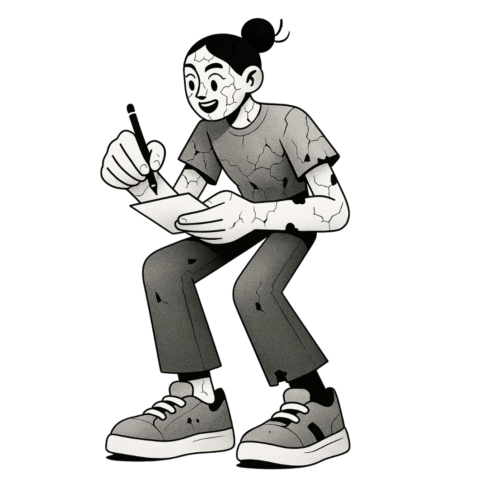

Kit Psicologico Practico
Tu radar de rumia
Una guia paso a paso para salir del piloto automatico y evitar que tus pensamientos secuestren tu atencion. Aprende a detectar cuando tu mente rumia y como salir del bucle mental.
$7.99 USD
01 / QUE INCLUYE
Contenido del kit
- Sistema de deteccion personal de patrones de rumia (tu "radar" interno)
- Registro diario de disparadores y contextos de la rumia
- Tecnicas de interrupcion del ciclo rumiativo basadas en ACT y DBT
- Ejercicios de anclaje al presente para cortar el bucle mental
- Plan semanal de entrenamiento de la atencion consciente
02 / PARA QUIEN
Ideal si...
- Tu mente funciona en "piloto automatico" la mayor parte del tiempo
- Revives situaciones pasadas o te preocupas excesivamente por el futuro
- Te cuesta identificar cuando la rumia empieza hasta que ya te consume
- Quieres desarrollar una relacion mas sana y consciente con tu mente
03 / QUIENES LO DISENAN

Creado por Edith Delgado
Psicologa clinica y psicoterapeuta con +18 años de experiencia. Especialista en EMDR, ACT, DBT, FAP, Mindfulness e Hipnosis Clinica. Cada kit esta disenado desde la evidencia cientifica y la practica clinica real.